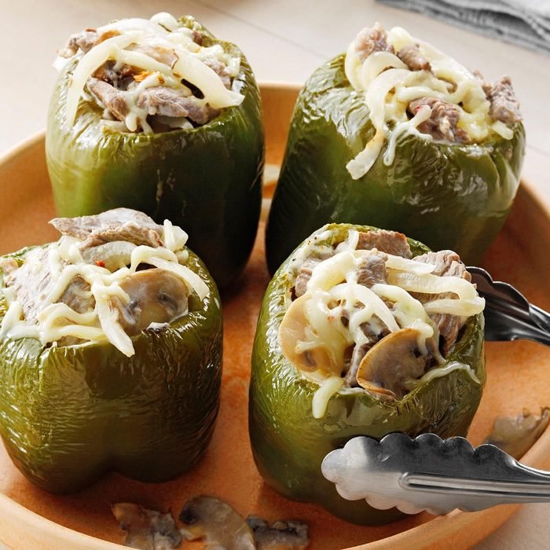

Cheesesteak-Stuffed Peppers

Description
This hearty, low-carb dish can stand alone or be paired with small sides. Loaded with protien and veggies, this delectable meal will satisify your cravings. You can substitute the protien or cheese to put your own personal twist on this amazing dish.
4 Servings
Ingredients
- 2 tbs canola oil, divided
- 1/2 lb sliced fresh mushrooms
- 1 large sween onion, sliced
- 2 garlic cloves, minced
- 1/2 tsp dried thyme
- 1/2 tsp dried oregano
- 1/2 tsp salt, divided
- 1/2 tsp pepper, divided
- 1 lb beef top sirloin steak, thinly sliced
- 8 oz chream cheese, cubed
- 2 cups shredded pepper jack cheese, divided
- 4 large green peppers
- 1 cup water
Steps
- In a large skillet, heat 1 tbs oil over medium-high heat. Add mushrooms and onion; stir occationally until crisp-tender, 6-8 minutes. Add garlic, thyme, oregano, 1/4 tsp salt and 1/4 tsp pepper; cook 1 minute longer then transfer to a large bowl for later.
- Using the same skillet, heat remaining 1 tbs oil over meduim-high heat. Add steak, 1/4 tsp salt and 1/4 tsp pepper; stir occationally until meat is fully browned, 4-5 minutes. Add cream cheese, 1-1/2 cups pepper jack cheese and onion mixture that was set aside; stir until cheeses are melted. Remove from heat.
- Cut and discard tops from the green peppers and remove the seeds. Fill with steak mixture.
- Place trivet insert and 1 cup water in a 6-qt electric pressure cooker. Set peppers on trivet. Lock lid; close pressure-release valve. Adjust to pressure-cook on high for 10 mins.
- Quick-release pressure. Sprinkle the peppers with the remaining 1/2 cup pepper jack cheese; cover and let sit until the cheese is melted, about 5 minutes.
Return to Recipe List